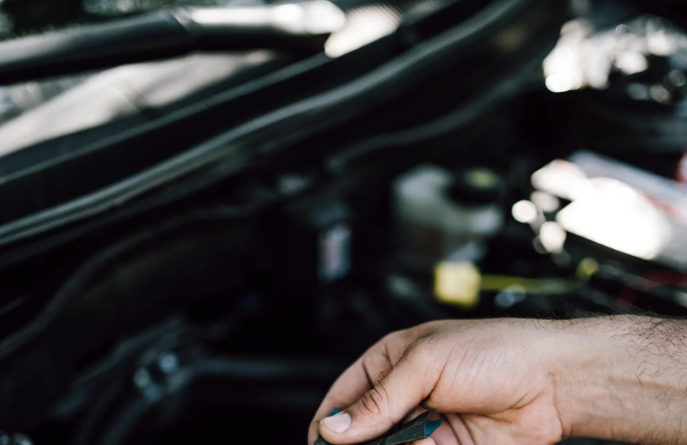

▲ 중고차 정밀점검 자료사진 — 리본카는 특허받은 점검 기준 'RQI'로 196개 항목을 점검해 결과를 그대로 공개한다
"이 매물, 무사고라는데 진짜일까." 중고차를 알아본 사람이라면 한 번쯤 품었을 의심이다. 성분과 원재료, 제조 공정까지 꼼꼼히 따져보고 지갑을 여는 '체크슈머(Check+Consumer)' 트렌드가 식품·화장품을 넘어 중고차 시장까지 번지고 있다. 직영 중고차 플랫폼 리본카가 특허받은 정밀점검 기준 'RQI'를 앞세워 이 흐름에 응답하고 나섰다.
1. 중고차 시장의 오랜 병목 — '깜깜이 거래'와 정보 비대칭
중고차 시장은 대표적인 정보 비대칭 시장으로 꼽힌다. 판매자는 차량의 사고 이력, 정비 기록, 소모품 교체 시점을 속속들이 알지만 구매자는 성능점검기록부 몇 장과 육안 점검에 의존해야 하는 경우가 많다. 같은 연식·같은 차종이라도 실제 상태 편차가 크다는 점이 문제를 키운다. 겉보기엔 비슷해 보이는 두 매물이 실제로는 전혀 다른 소모품 수명과 사고 이력을 가질 수 있다는 뜻이다.
이런 구조에서 소비자가 기댈 수 있는 정보는 제한적이었다. 보험개발원의 사고 이력 조회, 판매자가 제공하는 성능점검기록부 정도가 전부였고, 타이어 마모도나 누유·누수 여부처럼 일반인이 직접 확인하기 어려운 항목은 사실상 판매자의 말에 의존할 수밖에 없었다. 중고차 매매업 전반에 대한 소비자 불신이 오랫동안 이어져 온 배경이다.

▲ 중고차 매매단지 — 같은 연식·같은 차종이라도 관리 이력에 따라 실제 상태 편차가 큰 것이 중고차 시장의 특성이다
2. '체크슈머'는 누구인가 — 왜 중고차까지 번졌나
체크슈머는 '확인하다(Check)'와 '소비자(Consumer)'를 합친 신조어로, 성분과 원재료, 제조 과정, 인증 여부 등을 꼼꼼히 따져본 뒤 구매를 결정하는 소비자를 가리킨다. 식품 성분표를 정독하고 화장품 전성분을 검색해보는 습관이 소비 전반으로 확산되는 흐름과 궤를 같이한다.
중고차는 자동차라는 상품 특성상 이런 성향이 더 강하게 나타날 수밖에 없는 카테고리다. 수백만원에서 수천만원에 이르는 고가 상품인 데다, 안전과 직결되는 부품(브레이크, 배터리, 전장 계통 등)의 상태를 잘못 판단하면 구매 이후 비용 부담으로 곧장 이어지기 때문이다. 업계에서는 소비자가 브랜드나 가격보다 '이 차의 상태를 얼마나 투명하게 확인할 수 있는가'를 우선 기준으로 삼는 경향이 뚜렷해지고 있다고 본다. 실제로 리본카가 진행한 설문조사에서도 비대면으로 중고차를 구매할 때 가장 중요하게 보는 기준으로 응답자의 60%가 '정확하고 전문적인 차량 정보 제공'을 꼽아, 가격이나 브랜드보다 정보의 신뢰도를 우선시하는 흐름을 뒷받침했다.
3. 리본카의 해법 — 직영 매입부터 출고까지, RTC라는 구조
2018년 10월 출범한 리본카(RebornCar)는 자동차 유통 전문기업 오토플러스가 운영하는 직영 중고차 브랜드다. 엔카닷컴이나 KB차차차처럼 판매자와 구매자를 연결하는 중개형 플랫폼과 달리, 리본카는 매입·상품화·판매까지 전 과정을 직접 운영한다는 점에서 구조 자체가 다르다.
이 구조의 핵심에 직영 리컨디셔닝센터 'RTC(RebornCar Trust Center)'가 있다. 매입한 차량은 RTC로 들어가 표준화된 절차에 따라 점검·정비·상품화 과정을 거친 뒤에야 판매 목록에 오른다. 같은 연식·같은 차종이라도 실제 상태 편차가 큰 중고차 특성상, 이렇게 하나의 관리 주체가 전 과정을 통제하면 매물마다 점검 기준이 들쭉날쭉해지는 문제를 줄일 수 있다는 게 회사 측 설명이다. RTC는 국제시험인증기관 TÜV SÜD의 정비 프로세스 인증을 6년 연속으로 획득하며 외부 검증도 받고 있다. 전기차·하이브리드(EV·PHEV) 정비 부문에서는 2023년 TÜV SÜD 글로벌 최초 인증을 받은 뒤 2025년까지 3년 연속 인증을 유지하며 친환경차 정비 역량도 별도로 입증했다.
📍 중개 플랫폼과 직영 브랜드, 뭐가 다른가
중개 플랫폼(엔카닷컴, KB차차차 등)은 개인·매매상사의 매물을 모아 보여주는 '장터' 역할을 한다. 매물 상태는 등록한 판매자마다 다를 수 있다.
직영 브랜드(리본카 등)는 회사가 직접 차량을 매입해 자체 기준으로 점검·정비한 뒤 판매한다. 점검 주체가 하나로 통일되는 대신, 매물 규모는 중개 플랫폼보다 작을 수 있다.
4. RQI 리포트, 실제로 뭘 보여주나 — 196개 항목의 속살
RQI(RebornCar Quality Inspection)는 리본카가 2017년 특허를 취득한 자체 정밀점검 기준이다. RTC는 이 기준에 따라 196개 항목을 표준화된 절차로 점검하고, 그 결과를 약 29페이지 분량의 'RQI 리포트'로 정리해 홈페이지에 공개한다.
| 구분 | 점검 항목 |
|---|---|
| 외관 | 내·외관 상태, 시트 마모, 도장 상태 |
| 엔진·기계 | 엔진룸 상태, 누유·누수 여부, 브레이크 |
| 소모품 | 타이어 마모도 |
| 이력 | 보험 이력(사고·침수 등) |
| 주행 | 주행 성능 전반 |
단순히 '이상 없음'이라고 표기하는 수준이 아니라는 점이 특징으로 꼽힌다. 굿모닝경제 보도에 따르면 RQI 리포트는 검사 결과를 수치와 예시 이미지를 함께 제공하는 방식으로 구성돼, 자동차 지식이 부족한 초보 구매자도 상태를 가늠할 수 있도록 설계됐다. 타이어 마모처럼 눈으로 보면 알 수 있는 항목뿐 아니라, 누유·누수처럼 일반 구매자가 직접 확인하기 어려운 항목까지 리포트에 포함된다.
리본카는 RQI 외에도 2021년 특허를 취득한 '냄새 등급제'를 운영한다. 전문 장비로 차량 실내 냄새를 등급화해 측정하는 방식으로, 흡연이나 반려동물 동승처럼 서류상으로는 드러나지 않지만 실제 만족도에 큰 영향을 주는 요소까지 수치로 확인할 수 있게 한 것이 특징이다. 홈페이지·앱을 통한 리포트 공개뿐 아니라, 하부 상태나 엔진 구동음 등을 실시간으로 보여주는 라이브 상담 서비스도 함께 제공해 비대면 구매 시 정보 격차를 줄인다.

▲ 엔진룸 점검 자료사진 — 누유·누수 여부처럼 일반 구매자가 육안으로 확인하기 어려운 항목까지 RQI 리포트에 담긴다
RQI 리포트 공개 방식과 실제 매물 조회는 리본카 공식 홈페이지에서 확인할 수 있다. 리본카 공식 홈페이지 바로가기
5. 전기차는 다르다 — SOH부터 절연저항까지
전기차·하이브리드 구매가 늘면서 리본카는 일반 내연기관 차량과는 별도로 전용 점검 항목을 추가했다. 전기차는 배터리 상태가 곧 차량 가치와 직결되지만, 엔진오일 상태처럼 육안으로 가늠할 수 있는 내연기관 소모품과 달리 전문 장비 없이는 소비자가 스스로 확인할 방법이 사실상 없다는 점이 배경이다.
| 항목 | 점검 내용 |
|---|---|
| SOH(State of Health) | 신차 대비 배터리 잔여 수명과 성능 |
| 셀 밸런스 | 배터리 셀 간 전압 편차 |
| 셀 전압 | 개별 셀의 전압 상태 |
| 절연저항 | 고전압 계통의 절연 상태(감전·누전 위험 점검) |
| 배터리 온도 | 배터리팩 온도 이상 여부 |
이 외에도 충전구 절연 상태, 가상 엔진 사운드(VESS) 작동 여부처럼 전기차·하이브리드에 특화된 항목을 추가로 확인한다. SOH는 특히 중요한 지표로 꼽히는데, 같은 연식이라도 배터리 관리 이력에 따라 잔여 성능 편차가 클 수 있어 이 수치 하나가 실질적인 구매 판단 기준이 되기 때문이다.

▲ 전기차 배터리팩 내부 자료사진 — 전기차는 SOH(배터리 잔여수명), 셀 밸런스, 절연저항 등 전용 항목을 별도로 점검한다 ⓒ Wikimedia Commons
✅ 중고 전기차 구매 전 체크리스트
· SOH(배터리 잔여수명) 수치를 반드시 확인 — 같은 연식이라도 편차가 클 수 있다
· 절연저항 점검 결과는 고전압 계통 안전과 직결되는 항목이니 빠짐없이 확인
· 완속·급속 충전 이력이 잦았던 차량은 배터리 열화가 더 빠를 수 있다는 점 참고
· 배터리 보증 잔여 기간(제조사 보증 승계 여부)도 함께 확인
6. 전문가가 말하는 중고차 구매 팁
오토뷰가 소개한 구매 가이드에 따르면, 보험 이력만으로 차량 상태를 판단하는 것은 위험하다. 사고·침수 이력이 없더라도 관리가 부실했던 차량은 오히려 짧은 시간 안에 문제가 드러날 수 있어서다. 대신 정기 점검과 소모품 교체가 꾸준히 이뤄진 차량이 주행거리가 다소 길더라도 더 가치 있는 매물일 수 있다는 것이 전문가들의 공통된 조언이다.
스마트 크루즈 컨트롤, 어라운드 뷰 모니터 같은 편의사양이 실제로 정상 작동하는지, 엔진오일·타이어 등 소모품 교체 기록이 남아 있는지를 점검하면 인수 직후 예상치 못한 추가 지출을 줄일 수 있다. 리본카는 RTC에서 주요 소모품을 교체한 뒤 차량을 인도하고, 8일 무료 환불 서비스로 구매 후 초기 불만족 리스크를 보완한다고 설명한다.
7. 요약
식품·화장품에서 시작된 '체크슈머' 트렌드가 중고차 시장까지 번지면서, 정보 비대칭이 컸던 이 시장에서도 투명한 점검 정보 공개가 구매 결정의 핵심 기준으로 떠오르고 있다. 리본카는 2017년 특허 취득한 자체 기준 'RQI'로 196개 항목을 점검하고, 그 결과를 약 29페이지 분량의 리포트로 공개하는 방식을 택했다.
직영 리컨디셔닝센터 'RTC'가 매입부터 출고까지 전 과정을 통제해 매물마다 점검 기준이 달라지는 문제를 줄이고, 전기차·하이브리드는 SOH·절연저항 등 5개 전용 항목을 추가로 점검한다. 다만 보험 이력이나 점검 리포트 하나만으로 모든 것을 판단하기보다, 소모품 교체 이력과 편의사양 작동 여부를 함께 살피는 것이 안전한 중고차 구매의 기본이라는 점은 변하지 않는다.